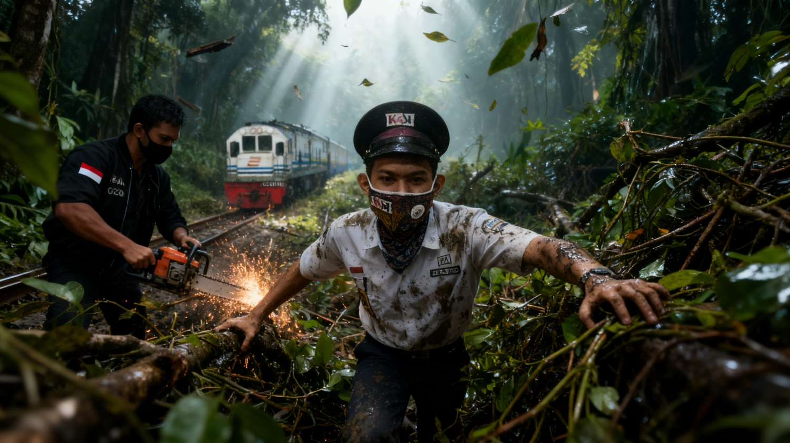
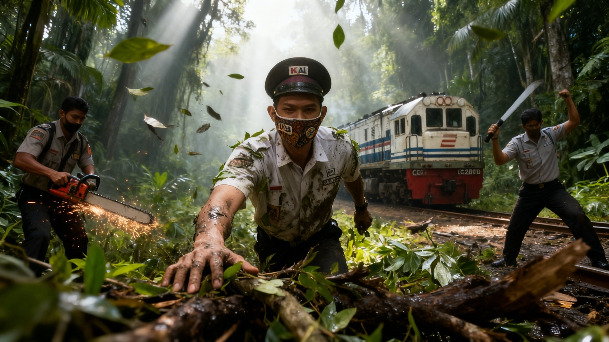
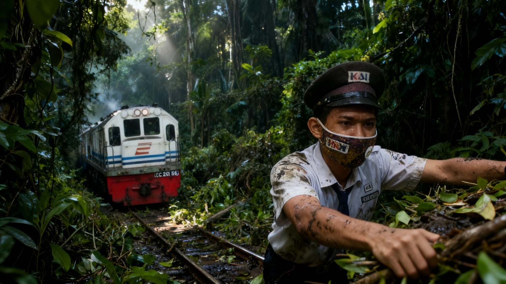

Awal Perjalanan
Ketika kami pertama kali memulai proyek "StickNext Rail Saga", visi kami adalah menangkap momen-momen authentik dari kehidupan sehari-hari yang sering terlewatkan.
Setiap foto dimulai dengan pertanyaan sederhana: "Apa cerita yang ingin saya ceritakan?"

Menemukan Ritme
Dalam fotografi slice of life, konsistensi adalah kunci. Kami belajar bahwa setiap hari menawarkan peluang baru untuk menceritakan kisah yang bermakna.
Pencahayaan, komposisi, dan emosi adalah elemen yang kami perhatikan dengan teliti.

Evolusi Gaya
Seiring waktu, gaya visual kami berkembang. Dari eksperimen dengan komposisi hingga pemahaman yang lebih dalam tentang pentingnya menceritakan kisah sejati.
Koleksi ini adalah hasil dari perjalanan pembelajaran yang terus berlanjut.